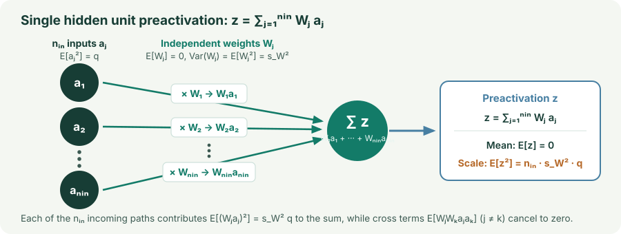

Initialization: Break Symmetry and Keep Signals Alive
See why identical hidden units stay identical, derive the per-layer signal multiplier, and track how weight scale compounds across depth.
Weight initialization has two jobs before the first gradient step: ensure hidden units learn distinct features, and keep forward activations and backward gradients from vanishing or exploding as they pass through many layers.
1. Why identical hidden units stay identical
If hidden neurons in a layer start with identical parameters, they compute the same forward activation and receive the same backward gradient on every step. Compare three ways of initializing a layer’s weights $W$ and biases $b$:
- Equal nonzero weights: Every hidden unit computes the exact same activation $\phi(w^\top x+b)$ and receives the exact same gradient during backpropagation. Every deterministic update changes all units identically, so the layer collapses to a single duplicated feature forever.
- All-zero weights ($W=0$): Every hidden unit outputs the same constant activation $\phi(b)$, and incoming-weight gradients vanish on the first step wherever downstream weights are zero, keeping hidden units locked in symmetry.
- Zero biases ($b=0$) with random weights: Sampling distinct random weight rows $w_i\ne w_j$ immediately gives each hidden unit a different preactivation $w_i^\top x$ and a different gradient on the very first pass, so initializing biases to zero is completely safe.
2. How one layer changes signal scale

Breaking symmetry only requires random weights, but picking an arbitrary scale like $W_{ij}\sim\mathcal N(0,0.01^2)$ fails in deep networks. Consider a single preactivation $z=\sum_{j=1}^{n_{\rm in}}W_ja_j$, where weights $W_j$ are independent with mean $\mathbb E[W_j]=0$ and variance $\operatorname{Var}(W_j)=\mathbb E[W_j^2]=s_W^2$, and are independent of the inputs $a_j$, which have second moment $q=\mathbb E[a_j^2]$.
First, compute the expected value (mean) $\mathbb E[z]$. By linearity of expectation and the independence of $W_j$ and $a_j$, the mean of $z$ is always zero—even if the inputs $a_j$ have a nonzero mean:
Because $\mathbb E[z]=0$, the output variance equals the output second moment: $\operatorname{Var}(z)=\mathbb E[z^2]-(\mathbb E[z])^2=\mathbb E[z^2]$. Now compute $\mathbb E[z^2]$:
- 1. Expand the square of the sum: Write the square as a product of two sums with indices $j$ and $k$, then split the $n_{\rm in}^2$ pairs into $j=k$ and $j\ne k$:
$$z^2=\left(\sum_{j=1}^{n_{\rm in}}W_ja_j\right)\left(\sum_{k=1}^{n_{\rm in}}W_ka_k\right)=\sum_{j=1}^{n_{\rm in}}\sum_{k=1}^{n_{\rm in}}W_jW_ka_ja_k=\underbrace{\sum_{j=1}^{n_{\rm in}}W_j^2a_j^2}_{\text{diagonal }(j=k)}+\underbrace{\sum_{j\ne k}W_jW_ka_ja_k}_{\text{cross terms }(j\ne k)}.$$
- 2. Take expectations ($\mathbb E[z^2]$): For $j\ne k$, independence and $\mathbb E[W_j]=0$ make every cross term vanish, while each of the $n_{\rm in}$ diagonal terms contributes $\mathbb E[W_j^2]\mathbb E[a_j^2]=s_W^2q$:
$$\mathbb E[z^2]=\sum_{j=1}^{n_{\rm in}}\mathbb E[W_j^2]\,\mathbb E[a_j^2]+\sum_{j\ne k}\underbrace{\mathbb E[W_j]}_{0}\underbrace{\mathbb E[W_k]}_{0}\mathbb E[a_ja_k]=n_{\rm in}\,s_W^2\,q,\qquad\operatorname{Var}(z)=\mathbb E[z^2]-\bigl(\mathbb E[z]\bigr)^2=n_{\rm in}\,s_W^2\,q.$$
How variance controls forward signal scale: Because $\mathbb E[z]=0$, the mean tells us nothing about how large the numbers $z$ actually are—positive and negative preactivations cancel out whether $z\in[-10^{-4},10^{-4}]$ or $z\in[-10^4,10^4]$. The typical magnitude (root-mean-square scale) of $z$ is governed by the standard deviation $\sqrt{\operatorname{Var}(z)}=\sqrt{\mathbb E[z^2]}=\bigl(\sqrt{n_{\rm in}}\,s_W\bigr)\sqrt{q}$:
- High variance ($n_{\rm in}s_W^2\gg 1$): Preactivation magnitudes $|z|\sim\sqrt{\operatorname{Var}(z)}$ blow up across the layer. For unbounded activations ($\text{Linear}$, $\text{ReLU}$), feature magnitudes surge and amplify downstream parameter gradients $\partial\ell/\partial W_{l+1}=\delta_{l+1}h_l^\top$; for bounded activations ($\tanh$, $\sigma$), large $|z|$ slams units into their flat saturation tails ($\tanh(z)\approx\pm 1$, $\sigma(z)\approx 0\text{ or }1$) where differences between inputs are wiped out and $\phi'(z)\to 0$.
- Low variance ($n_{\rm in}s_W^2\ll 1$): Preactivations collapse toward $z\approx 0$, shrinking activation magnitudes $|h_l|$ so downstream layers receive almost no signal energy (or a flat constant $\sigma(0)=0.5$ in sigmoid) and weight gradients $\delta_{l+1}h_l^\top$ vanish.
- Scale-preserving variance ($n_{\rm in}s_W^2=1$, i.e. $s_W=1/\sqrt{n_{\rm in}}$): Keeps the output RMS scale $\sqrt{\operatorname{Var}(z)}=\sqrt{q}$ matched to the input scale inside the active region of $\phi(z)$.
Why the recurrence tracks the second moment $\mathbb E[a_j^2]$ instead of variance $\operatorname{Var}(a_j)$: By definition, variance measures expected squared deviation around the mean $\mu_a=\mathbb E[a_j]$, whereas the second moment measures expected squared magnitude around zero. Expanding $\operatorname{Var}(a_j)=\mathbb E[(a_j-\mu_a)^2]$ connects the two:
The second moment and variance coincide only when the inputs are zero-centered ($\mathbb E[a_j]=0$, as in linear layers or odd functions like $\tanh$). For non-negative activations, $\mathbb E[a_j]>0$ and the squared mean $(\mathbb E[a_j])^2$ inflates the next layer’s preactivation variance: sigmoid ($\sigma(z)\in(0,1)$) has mean $\mathbb E[a_j]=0.5$ on symmetric inputs—adding a baseline $(\mathbb E[a_j])^2=0.25$ even when signal spread $\operatorname{Var}(a_j)$ is tiny—and ReLU ($\max(0,z)\ge 0$) has $\mathbb E[a_j]>0$.
3. Compounding across depth: forward and backward
Now stack $L$ linear layers in a chain: $h_l=W_lh_{l-1}$ for $l=1,2,\dots,L$, starting from input $h_0=x$ with coordinate second moment $q_0=\mathbb E[h_{0,j}^2]$. Suppose every layer has width $n$ ($n_{\rm in}=n$) and each weight matrix $W_l\in\mathbb R^{n\times n}$ has independent zero-mean entries of variance $s_W^2$, independent of the incoming activations $h_{l-1}$.
Let $q_l=\mathbb E[h_{l,i}^2]$ denote the second moment of a coordinate after layer $l$. Applying our single-layer result from Section 2 to layer $l$—where $h_{l,i}=\sum_{j=1}^n W_{l,ij}h_{l-1,j}$ sums $n$ inputs of second moment $q_{l-1}$—shows that each layer multiplies the signal’s second moment by the per-layer factor $c=ns_W^2$. Unrolling that recurrence from layer $1$ through layer $L$ multiplies by $c$ at every step:
Because depth $L$ sits in the exponent, the signal scale forms a geometric progression with ratio $c=ns_W^2$, splitting initialization into three regimes:
- Vanishing forward signal ($c<1$, or $s_W<1/\sqrt{n}$): $c^L\to 0$ exponentially with depth $L$, shrinking activations toward zero before they reach the output.
- Exploding forward signal ($c>1$, or $s_W>1/\sqrt{n}$): $c^L\to\infty$ exponentially with depth $L$, causing activations to blow up across deep stacks.
- Scale-preserving boundary ($c=1$, or $s_W=1/\sqrt{n}$): $1^L=1$ for every $L$, keeping $q_L=q_0$ constant no matter how deep the network is.
Adding nonlinearities between layers ($z_l=W_lh_{l-1},\; h_l=\phi(z_l)$): In practice, deep networks place a nonlinear activation $\phi$ between every linear layer (otherwise $W_L\cdots W_1x$ would collapse into a single linear matrix). Each layer $l$ now happens in two sub-steps—first the linear sum produces preactivation $z_{l,i}=\sum_{j=1}^{n_{\rm in}}W_{l,ij}h_{l-1,j}$, and then the nonlinearity produces activation $h_{l,i}=\phi(z_{l,i})$:
To express $q_l$ in terms of $q_{l-1}$, we only need to know how $\phi$ changes the expected square $\mathbb E[\phi(z_{l,i})^2]$ relative to $\mathbb E[z_{l,i}^2]$.
Small-signal $\tanh$ ($\phi(z)\approx z$)
- Forward pass: Near $z=0$, $\tanh(z)=z+O(z^3)\approx z$. Squaring and taking expectations gives:
$$h_{l,i}=\tanh(z_{l,i})\approx z_{l,i}\implies q_l=\mathbb E[h_{l,i}^2]\approx\mathbb E[z_{l,i}^2]=(n_{\rm in}\,s_W^2)\,q_{l-1}\implies q_L\approx(n_{\rm in}\,s_W^2)^L q_0.$$Thus $n_{\rm in}s_W^2=1$ preserves scale (Xavier and LeCun initialization).
- Backward pass ($c_{\rm back}=n_{\rm out}s_W^2\,\mathbb E[\phi'(z_l)^2]$): If weights are large enough that $n_{\rm out}s_W^2\,\mathbb E[(1-\tanh^2(z_l))^2]>1$, backward gradients explode ($c_{\rm back}^L\to\infty$) even though $|\tanh(z_l)|\le 1$; if $z_l$ saturates into the flat tails where $\phi'(z_l)=1-\tanh^2(z_l)\to 0$ (or if $n_{\rm out}s_W^2<1$), then $c_{\rm back}<1$ and backward gradients vanish.
ReLU ($\phi(z)=\max(0,z)$)
- Forward pass: Even though $h_{l-1,j}\ge 0$ has $\mathbb E[h_{l-1,j}]>0$, multiplying by zero-mean symmetric weights $W_{l,ij}$ re-centers $z_{l,i}=\sum_j W_{l,ij}h_{l-1,j}$ symmetrically around $0$. ReLU keeps $z_{l,i}>0$ and zeros out $z_{l,i}\le 0$, halving the expected square:
$$q_l=\mathbb E\bigl[\max(0,z_{l,i})^2\bigr]=\int_0^\infty z^2p(z)\,dz=\frac12\,\mathbb E[z_{l,i}^2]=\left(\frac12\,n_{\rm in}\,s_W^2\right)q_{l-1}\implies q_L=\left(\frac12\,n_{\rm in}\,s_W^2\right)^L q_0.$$
- Where is the mean component from $\mathbb E[z_{l,i}^2]=n_{\rm in}s_W^2\bigl(\operatorname{Var}(a_j)+(\mathbb E[a_j])^2\bigr)$, and where does $\frac{1}{2\pi}\sigma_{z,l-1}^2$ come from? Writing $a_j=h_{l-1,j}=\max(0,z_{l-1,j})$ with preactivation variance $\sigma_{z,l-1}^2=\mathbb E[z_{l-1,j}^2]$, the mean term $(\mathbb E[a_j])^2>0$ is inside $\mathbb E[a_j^2]=q_{l-1}$. Here is where the $\frac{1}{2\pi}\sigma_{z,l-1}^2$ and $\bigl(\frac12-\frac{1}{2\pi}\bigr)\sigma_{z,l-1}^2$ factors come from step by step:
- Gaussian preactivation density (where $\pi$ enters): Because $z_{l-1,j}=\sum_{m=1}^{n_{\rm in}}W_{l-1,jm}h_{l-2,m}$ sums $n_{\rm in}$ independent zero-mean terms of total variance $\sigma_{z,l-1}^2$, by the Central Limit Theorem $z_{l-1,j}\sim\mathcal N(0,\sigma_{z,l-1}^2)$ with density
$$p(z)=\frac{1}{\sqrt{2\pi}\,\sigma_{z,l-1}}\,\exp\!\left(-\frac{z^2}{2\sigma_{z,l-1}^2}\right).$$
- Rectified mean $\mathbb E[a_j]=\frac{\sigma_{z,l-1}}{\sqrt{2\pi}}$ and squared mean $(\mathbb E[a_j])^2=\frac{1}{2\pi}\sigma_{z,l-1}^2$: Since $a_j=\max(0,z_{l-1,j})$ is $0$ for $z\le 0$ and $z$ for $z>0$, we integrate $z\,p(z)$ over $(0,\infty)$ using the substitution $u=\frac{z^2}{2\sigma_{z,l-1}^2}$ (so $du=\frac{z}{\sigma_{z,l-1}^2}\,dz\implies z\,dz=\sigma_{z,l-1}^2\,du$):
$$\begin{aligned}\mathbb E[a_j]&=\int_{-\infty}^0 0\cdot p(z)\,dz+\int_0^\infty z\,\frac{1}{\sqrt{2\pi}\,\sigma_{z,l-1}}e^{-z^2/(2\sigma_{z,l-1}^2)}\,dz\\[4pt]&=\frac{1}{\sqrt{2\pi}\,\sigma_{z,l-1}}\int_0^\infty e^{-u}\,\bigl(\sigma_{z,l-1}^2\,du\bigr)=\frac{\sigma_{z,l-1}}{\sqrt{2\pi}}\Bigl[-e^{-u}\Bigr]_0^\infty=\frac{\sigma_{z,l-1}}{\sqrt{2\pi}}\\[6pt]\implies\quad\bigl(\mathbb E[a_j]\bigr)^2&=\left(\frac{\sigma_{z,l-1}}{\sqrt{2\pi}}\right)^2=\frac{1}{2\pi}\,\sigma_{z,l-1}^2\approx 0.159\,\sigma_{z,l-1}^2.\end{aligned}$$
- Uncentered second moment $\mathbb E[a_j^2]=\frac12\sigma_{z,l-1}^2$: Integrating $z^2p(z)$ over $z>0$ takes exactly half of the symmetric full-Gaussian variance $\int_{-\infty}^\infty z^2p(z)\,dz=\sigma_{z,l-1}^2$:
$$\mathbb E[a_j^2]=\int_0^\infty z^2p(z)\,dz=\frac12\int_{-\infty}^\infty z^2p(z)\,dz=\frac12\,\sigma_{z,l-1}^2=0.5\,\sigma_{z,l-1}^2.$$
- Centered variance $\operatorname{Var}(a_j)=\bigl(\frac12-\frac{1}{2\pi}\bigr)\sigma_{z,l-1}^2$: Clamping the negative half to $0$ does not leave $\operatorname{Var}(a_j)=\frac12\sigma_{z,l-1}^2$—because the mean shifted from $0$ up to $\sigma_{z,l-1}/\sqrt{2\pi}$, the spread around that new positive mean is smaller by $(\mathbb E[a_j])^2=\frac{1}{2\pi}\sigma_{z,l-1}^2$:
$$\operatorname{Var}(a_j)=\mathbb E[a_j^2]-\bigl(\mathbb E[a_j]\bigr)^2=\frac12\,\sigma_{z,l-1}^2-\frac{1}{2\pi}\,\sigma_{z,l-1}^2=\left(\frac12-\frac{1}{2\pi}\right)\sigma_{z,l-1}^2\approx 0.341\,\sigma_{z,l-1}^2.$$
- Adding $\operatorname{Var}(a_j)$ and $(\mathbb E[a_j])^2$ back together: The $-\frac{1}{2\pi}\sigma_{z,l-1}^2$ and $+\frac{1}{2\pi}\sigma_{z,l-1}^2$ terms cancel, giving $\frac12\sigma_{z,l-1}^2$:
$$\mathbb E[a_j^2]=q_{l-1}=\underbrace{\operatorname{Var}(a_j)}_{\left(\frac{1}{2}-\frac{1}{2\pi}\right)\sigma_{z,l-1}^2\;\approx\;0.341\,\sigma_{z,l-1}^2}+\underbrace{\bigl(\mathbb E[a_j]\bigr)^2}_{\frac{1}{2\pi}\sigma_{z,l-1}^2\;\approx\;0.159\,\sigma_{z,l-1}^2}=\frac12\,\sigma_{z,l-1}^2\implies\sigma_{z,l}^2=n_{\rm in}\,s_W^2\,\mathbb E[a_j^2]=\left(\frac12\,n_{\rm in}\,s_W^2\right)\sigma_{z,l-1}^2.$$
- Gaussian preactivation density (where $\pi$ enters): Because $z_{l-1,j}=\sum_{m=1}^{n_{\rm in}}W_{l-1,jm}h_{l-2,m}$ sums $n_{\rm in}$ independent zero-mean terms of total variance $\sigma_{z,l-1}^2$, by the Central Limit Theorem $z_{l-1,j}\sim\mathcal N(0,\sigma_{z,l-1}^2)$ with density
- Scale condition: Since ReLU halves both $q_l$ and the backward derivative moment $\mathbb E[\phi'(z_l)^2]=\frac12$, $\frac12n_{\rm in}s_W^2<1$ vanishes, $\frac12n_{\rm in}s_W^2>1$ explodes, and preserving scale requires $s_W^2=2/n_{\rm in}$ (He initialization).
Backpropagation variance across a layer and across depth
The exact same second-moment algebra applies in reverse during backpropagation. With $h_l=\phi(z_l)$ and $z_l=W_lh_{l-1}$ ($W_l\in\mathbb R^{n_{\rm out}\times n_{\rm in}}$), let $g_l=\partial\ell/\partial h_l$ be the upstream activation gradient and $\delta_l=\partial\ell/\partial z_l=g_l\odot\phi'(z_l)$ be the preactivation gradient. By the chain rule, layer $l$ routes $\delta_l$ backward to $g_{l-1}$ via the transpose $W_l^\top$, summing over all $n_{\rm out}$ downstream units that input $i$ feeds into:
Treating $W_{l,ki}$, $g_{l,k}$, and $\phi'(z_{l,k})$ as independent at initialization with $\mathbb E[W_{l,ki}]=0$ and $\operatorname{Var}(W_{l,ki})=\mathbb E[W_{l,ki}^2]=s_W^2$, we compute the backward mean and variance exactly as we did in the forward pass:
- 1. Backward mean is zero ($\mathbb E[g_{l-1,i}]=0$): Because $\mathbb E[W_{l,ki}]=0$, linearity of expectation gives $\mathbb E[g_{l-1,i}]=\sum_{k=1}^{n_{\rm out}}\mathbb E[W_{l,ki}]\,\mathbb E[g_{l,k}\,\phi'(z_{l,k})]=0$, so $\operatorname{Var}(g_{l-1,i})=\mathbb E[g_{l-1,i}^2]$.
- 2. Backward second moment and variance ($\operatorname{Var}(g_{l-1,i})$): Squaring the sum over $k=1,\dots,n_{\rm out}$ and taking expectations drops all $k\ne m$ cross terms (since $\mathbb E[W_{l,ki}]\mathbb E[W_{l,mi}]=0$) and sums the $n_{\rm out}$ diagonal terms:
$$\begin{aligned}\operatorname{Var}(g_{l-1,i})=\mathbb E[g_{l-1,i}^2]&=\mathbb E\!\left[\left(\sum_{k=1}^{n_{\rm out}}W_{l,ki}\,g_{l,k}\,\phi'(z_{l,k})\right)^2\right]\\[4pt]&=\sum_{k=1}^{n_{\rm out}}\mathbb E[W_{l,ki}^2]\,\mathbb E\bigl[\phi'(z_{l,k})^2\bigr]\,\mathbb E[g_{l,k}^2]+\sum_{k\ne m}\underbrace{\mathbb E[W_{l,ki}]}_{0}\underbrace{\mathbb E[W_{l,mi}]}_{0}\mathbb E[\delta_{l,k}\delta_{l,m}]\\[4pt]&=\Bigl(n_{\rm out}\,s_W^2\,\mathbb E\bigl[\phi'(z_l)^2\bigr]\Bigr)\,\mathbb E[g_{l,k}^2].\end{aligned}$$
- 3. Unrolling backward across $L$ layers (and into weight gradients): Writing $\tilde q_l=\mathbb E[g_{l,i}^2]$ for the gradient second moment at layer $l$ and $c_{\rm back}=n_{\rm out}\,s_W^2\,\mathbb E[\phi'(z_l)^2]$ for the backward per-layer multiplier (where $\mathbb E[\phi'(z_l)^2]\approx 1$ for small-signal $\tanh$ and $\frac12$ for ReLU), unrolling from the output layer $L$ back to the input layer $0$ gives:
$$\tilde q_{l-1}=c_{\rm back}\,\tilde q_l\implies\tilde q_0=\mathbb E[g_{0,i}^2]=c_{\rm back}^L\,\tilde q_L=\Bigl(n_{\rm out}\,s_W^2\,\mathbb E\bigl[\phi'(z_l)^2\bigr]\Bigr)^L\tilde q_L.$$Meanwhile, each weight gradient $\frac{\partial\ell}{\partial W_{l,ki}}=\delta_{l,k}\,h_{l-1,i}$ multiplies the backward signal from layer $l$ with the forward activation from layer $l-1$, giving variance $\operatorname{Var}\!\bigl(\frac{\partial\ell}{\partial W_{l,ki}}\bigr)=\mathbb E[\phi'(z_l)^2]\,\tilde q_l\,q_{l-1}$. Forward propagation counts inputs $n_{\rm in}$; backward propagation counts outputs $n_{\rm out}$.
4. Questions worth answering
Distinct random weight rows $w_i$ already give each hidden unit a different preactivation $w_i^\top x$ and a different gradient on step 1, so $b_i=0$ does not trap units in symmetry.
Yes, both: each backward step multiplies gradient variance by $c_{\rm back}=n_{\rm out}s_W^2\,\mathbb E[(1-\tanh^2(z_l))^2]$. In the flat tails ($|\tanh(z_l)|\approx 1$), $1-\tanh^2(z_l)\to 0$ drives $c_{\rm back}<1$ so backward gradients vanish; conversely, if $n_{\rm out}s_W^2$ is large enough that $c_{\rm back}>1$ for units still passing slope, the product $\prod_l W_l^\top\operatorname{diag}(\phi'(z_l))$ explodes as $c_{\rm back}^L\to\infty$ even though $|\tanh(z_l)|\le 1$.
Because $\mathbb E[(W_j a_j)^2]=\mathbb E[W_j^2]\mathbb E[a_j^2]=s_W^2\mathbb E[a_j^2]$. After a non-negative activation like ReLU, $\mathbb E[a_j]>0$, so $\mathbb E[a_j^2]=\operatorname{Var}(a_j)+(\mathbb E[a_j])^2$ is strictly larger than $\operatorname{Var}(a_j)$.
Sources
Glorot and Bengio, Understanding the Difficulty of Training Deep Feedforward Neural Networks; He et al., Delving Deep into Rectifiers; Saxe et al., Deep Linear Network Dynamics.